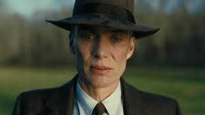
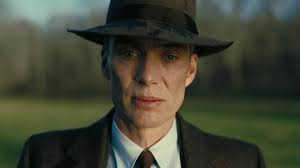

Мои любимые фильмы
Опенгеймер
Краткое содержание фильма
История жизни американского физика-теоретика Роберта Оппенгеймера, который во времена Второй мировой войны руководил Манхэттенским проектом — секретными разработками ядерного оружия.
Кадры из фильма
 

О фильме
| Год | 2023 |
| Страна | США, Великобритания |
| Жанр | Биография, драма, история |
| Режиссер | Кристофер Нолан |
Остров проклятых
Краткое содержание фильма
Два американских судебных пристава отправляются на один из островов в штате Массачусетс, чтобы расследовать исчезновение пациентки клиники для умалишенных преступников. При проведении расследования им придется столкнуться с паутиной лжи, обрушившимся ураганом и смертельным бунтом обитателей клиники.
Кадры из фильма
О фильме
| Год | 2010 |
| Страна | США |
| Жанр | Триллер, мистерия |
| Режиссер | Мартин Скорсезе |
Алладин
Краткое содержание фильма
Молодой воришка по имени Аладдин хочет стать принцем, чтобы жениться на принцессе Жасмин. Тем временем визирь Аграбы Джафар, намеревается захватить власть над Аграбой, а для этого он стремится заполучить волшебную лампу, хранящуюся в пещере чудес, доступ к которой разрешен лишь тому, кого называют «алмаз неограненный», и этим человеком является никто иной как сам Аладдин.
Кадры из фильма
О фильме
| Год | 2019 |
| Страна | США |
| Жанр | Детский, фентези |
| Режиссер | Гай Ричи |